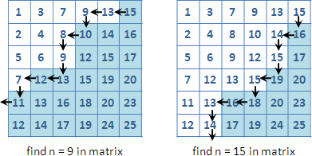

Sort
程度★ 難度★★★
父之齒隨行，兄之齒鴈行，朋友不相踰。《禮記．王制》
排序
排序就是把一群數字由小到大排好。實際要做排序，有兩個方向，一是將數字放入循序性資料結構（例如array與linked list），然後執行下述其中一種排序演算法。二是使用有排序功效的資料結構，例如binary heap、binary search tree，將數字整個倒進去、整個倒出來即排序完畢。
| best average worst | extra | stable
| case case case | space |
---------------+----------------------------+-------+--------
brute force | O(NR) O(NR) O(NR) | O(N) | O
selection sort | O(NN) O(NN) O(NN) | O(1) | X
bubble sort | O(N) O(NN) O(NN) | O(1) | O
gnome sort | O(N) O(NN) O(NN) | O(1) | O
insertion sort | O(N) O(NN) O(NN) | O(1) | O
Shell sort | O(NN) O(NN) O(NN) | O(1) | X
merge sort | O(NlogN) O(NlogN) O(NlogN) | O(N) | O
quicksort | O(NlogN) O(NlogN) O(NN) | O(N) | X
heapsort | O(NlogN) O(NlogN) O(NlogN) | O(1) | X
counting sort | O(N+R) O(N+R) O(N+R) | O(R) | O
bucket sort | O(N+B+?) O(N+B+?) O(N+B+?) | O(B) | X
radix sort | O(ND) O(ND) O(ND) | O(D) | O
除了數字可以排序之外，事實上字元也可以排序，因為電腦中的字元就是數字（請參照ASCII表）。指標也可以排序，因為指標就是記憶體位址也就是數字。一般資料也可以排序，只要資料裡的某個特定欄位是數字，這個欄位被稱作鍵值（key）。
排序原理
排序的基本原理，當今只有兩種，一是對調（數字是實數），二是放置（數字必須是整數）。
純粹透過對調來排序，已證明出數字兩兩比較的次數是Ω(NlogN)，不可能更少了，當今也已經有了到達下限的排序演算法，例如merge sort。同時透過對調與放置來排序，則可以打破方才的下限，例如flashsort。
純粹透過放置來排序，需要額外的記憶體空間來放置數字。時間複雜度通常是數字數量加上記憶體用量，效率相當好，只可惜只能處理整數，例如counting sort。
暴力搜尋
依序枚舉所有的整數，看看陣列裡頭有沒有。
令陣列最小值為A，最大值為B，並令A和B之間的整數有R個，R = B-A+1，則時間複雜度為O(R*N)。
Selection Sort
所有數值掃描一遍，找出最小值，並挪至陣列左端。接著遞迴處理尚未排序的N-1個元素。
Bubble Sort
由左到右，相鄰兩兩比較，較大者往右挪，最後最大值會出現在陣列右端。接著遞迴處理尚未排序的N-1個元素。
可以稍做改良，一旦排序好，便趕快結束。當資料很亂時，這麼做效益不彰。
Gnome Sort
原理和Bubble Sort相同，但是兩兩比較的先後次序有所改變。特色是程式碼只有一個迴圈，結構簡單。
Insertion Sort
由左到右，逐一把元素插入到目前已排序的陣列當中。需將大量數值往右挪，以騰出空間進行插入。
資料結構如果是array，可以使用Binary Search快速找到插入點，但是很不幸的，插入時還是要挪動整塊記憶體。資料結構如果是linked list，就無法使用Binary Search得到插入點，但是很幸運地，插入時不必挪動整塊記憶體。
UVa 10107
Shell Sort
採用Divide and Conquer，以固定間隔取得資料作為一組，各組各自做Insertion Sort，然後減少間隔大小，重複上述動作。【待補文字】
有類似partition的效果，可以有效減少交換的次數。
Shell是一個人名，是發明這個演算法的人，不是殼的意思。
Merge Sort
運用Divide and Conquer：Divide是把陣列等分兩半；Conquer是兩半分別排序；Merge是把兩半各自排序好的陣列，弄成一條排序好的陣列。
可以直接使用STL的stable_sort()。
UVa 10810
Quicksort
運用Divide and Conquer：Divide是選定pivot，把pivot挪到陣列邊緣，然後把陣列分成大的一邊和小的一邊；Conquer是兩邊分別排序；Merge不做任何事。
Quicksort可以任選一個數值當作pivot，排序結果都會正確。要讓Quicksort達到最佳效率，就是每次選中的pivot，都剛好可以把數值分成兩等份，如此一來時間複雜度是O(NlogN)，這是帶點運氣成份的。
固定選最後一個數值當作pivot，也是有機會每次都兩等份。但是這卻產生一個古怪的現象，當給定資料是已排序的時候，卻會變成每次都沒有分到，時間複雜度變成O(N^2)，超級慢。結果導致Quicksort有時快、有時卻很慢，遇到幾乎排序好的資料，更是慢到吐血。時快時慢，該快不快，那不是很莫名其妙嗎？
為了避免這種情況，可以每次都用亂數指定pivot，這樣不管給定資料是有排序的或是沒排序的，兩等份的機會都一樣多，如此就比較不會出現前述的古怪情形。不過這又衍生出一個問題，只是想做個排序，卻還得載入亂數模組，耗損系統資源、拖慢系統速度，帶來了新的壞處。
最後大家捨棄亂數，轉而構思一些簡單小技巧，讓選出來的pivot可以儘可能等分。例如Java的Quicksort是把數值切成前中後三段，拿這三段中央的數值的中位數當作pivot，這便是一個簡單實用的小技巧。
Quicksort演算法的陷阱相當多，須考慮資料數值全都相等、判斷式選用小於或者小於等於、分割點恰好選到最大值或者最小值、遞迴的區段範圍、遞迴的區段很短、……等等問題。編寫Quicksort的程式碼時，最好是寫一支窮舉所有n-tuple的程式，嘗試各種數據排列的情形，一一排序、驗證。如果擔心自己寫的程式碼用在正事上不妥當，也可以採用程式語言函式庫內建的Quicksort。
UVa 755
© 2010 tkcn. All rights reserved.
Heapsort
陣列可以作為二元樹資料結構。把陣列本身當作是heap，逐一把元素加入heap後，即達到排序功效。
Counting Sort
全部數字依其數值大小，放到相符位置，接著由小到大讀取各個位置的數字。
如果資料不僅僅是一個數值，而且鍵值會重複出現時，那麼就得用個容器把相同鍵值的資料串聯起來。
UVa 484
Bucket Sort
全部數字依其數值區間，放到相符桶子。接著各個桶子各自排序後，再由小到大讀取各個桶子的數字。
Radix Sort
由低位數到高位數，每個位數依序作為鍵值，做D次counting sort，D為位數大小。
如果資料為ASCII字串，則D = 128。如果資料表示成二進位數字，則D = logR。
適合排序字串。適合用在I/O速度很慢的情況。
Flash Sort
【待補文字】
Introspective Sort（Introsort）
可以直接使用STL的sort()。
【待補文字】
延伸閱讀：檢測排序演算法
【待補文字】
延伸閱讀：以指標排序
排序是會搬動資料，但是大多數時候我們不希望搬動資料。此時可以取出資料的位址，存入指標，對指標進行排序。
也有人以索引值排序，道理跟指標相同。
UVa 482
延伸閱讀：stable
兩筆相同資料，原本排在前頭的，排序後仍在前頭；原本排在後頭的，排序後仍在後頭。這稱做stable的排序演算法，相同資料、順序不變。
只要是放在陣列的資料，任何一種非stable的排序演算法，都可以修改成stable的排序演算法。你想到解決方法了嗎？
延伸閱讀：lexicographical order
【待補文字，二元多項式升冪降冪】
Search
程度★ 難度★★★
眾裏尋他千百度，驀然回首，那人卻在，燈火闌珊處。《辛棄疾．青玉案》
Search
搜尋。在資料結構當中，找出一個東西的位置。常與Search相提並論的則是Sort：在資料結構當中，把所有東西排好順序，放在正確位置。另外還有Select：在資料結構當中，找到特定順位的資料。
資料結構千變萬化，各有其獨特的Search、Sort、Select演算法。在陣列中，便有Binary Search、Bubble Sort、Quickselect這些演算法；在圖論中，則有Depth-first Search這樣的演算法。
甚至也有專為Search、Sort、Select而設計的資料結構，如各種Priority Queue、各種Search Tree、Hash Table、……等等。
Sequential Search
循序搜尋，每一筆資料依序找一遍，無一遺漏。
Binary Search
二元搜尋、二分搜尋，相信各位都耳熟能詳。細節的部分可以去翻閱演算法的書籍，或在網路上搜尋「Binary Search」或中文「二元搜尋法」，都可以找到詳細的資料。
Binary Search的基本原理是Divide and Conquer。若是資料是以陣列呈現──Binary Search是將一個將排序好的陣列，分為大的一邊和小的一邊，再看看我們要找的元素會在哪一邊。如此下去直到找到為止。分割的時候，也是採用對半分，想當然時間複雜度是O(logn)，以2為底的logn。
這裡提供個程式碼。它會回傳陣列中等於pivot的值的index，如果陣列中沒有等於pivot的值，就會回傳比pivot稍大一點的值的index。
我想大家最好自己重新寫一個，並驗證它在任何情形下，結果都會是正確無誤的，而不會有超出陣列範圍的結果。另外也請看看這篇文章：Extra, Extra - Read All About It: Nearly All Binary Searches and Mergesorts are Broken
上面這支程式亦可改用遞迴寫出來，不妨試試。
Binary Search的功用
Binary Search的功用，是在一個排序過的數列（即是遞增、遞減數列）當中，找出某個數字的索引值（index）。以數學的角度來看，Binary Search是在一個遞增（或遞減）的函數y = f(x)中，當我們知道y值時，用來快速的計算出x。
資料往往都是排序整齊的，也因此，Binary Search常被用來加速程式。一旦看到數據資料有排序、遞增遞減、成正比反比的時候，便要想到Binary Search。
還有一種常見的應用是：資料恰有兩種性質，明顯地分做兩邊──想找到分界之處，便可以用Binary Search。例如現在有一個函數y = f(x)，當x小於等於c時，f(x)會滿足某種條件；當x大於c時，f(x)就不會滿足某種條件──現在要把c求出來，便可以用Binary Search。
很多問題其實都隱含著上述這種性質，只是不容易發現。去發現問題隱含了這種性質，並去寫程式解決問題，這便是程式設計深奧且有趣之處。
這裡枚舉一些可以練習Binary Search的題目。你可以體驗一下Divide and Conquer的感覺。
UVa 10611 10077
Doubling Search
倍增搜尋。主持人心中有一正整數，我們可以一直猜他心中的正整數，但是他只會回答「太高」或「太低」或「正確」。請問要怎麼猜可以最快猜到他心中的正整數呢？
有個類似的團康遊戲叫做「終極密碼」，常常在綜藝節目出現。「終極密碼」的規則比較不一樣，數字範圍通常只有1到100，而且是很多個人輪流猜，越晚猜出來越好。這裡的猜數字遊戲，數字範圍是1到無限大，只有一個人猜，越早猜出來越好。
言歸正傳。從1開始一個一個往上猜，實在太慢了。比較快的猜法，是將問題分成兩個步驟，第一個步驟是先確定範圍，第二個步驟再來縮小範圍。
確定範圍的方式，可以從1、2、4、8、……這個順序下去猜。如果主持人不斷回答太低，我們就不斷往大數字猜，一直到主持人回答太高為止。如果主持人心中的正整數為N，則可以用O(logN)的時間得到一個合理的範圍，N會落在( 2^(k-1) , 2^k ]之間。
縮小範圍的方式，則與Binary Search的做法相同！如果剛剛都沒猜中，此時就要從( 2^(k-1) , 2^k )之間找出正確的正整數，運用Binary Search，只需O(logN)時間。
二分搜尋和倍增搜尋相互對立，前者除以二、後者乘以二。
Search in Sorted 2D Matrix
一個排序過的陣列可以用Binary Search來搜尋數值，那麼一個排序過的二維矩陣呢？當一個二維矩陣裡的元素經過排序，任一位置往右、往下都呈現嚴格遞增時（嚴格遞減也行），此時有個很巧妙的搜尋方式，時間複雜度為O(X+Y)，X與Y分別為矩陣的長與寬。
首先在腦中將矩陣的元素切割為大於n的一邊（右下角）與不大於n的一邊（左下角）。現在我們所要作的，便是遊走於大與小的邊緣來尋找n！從矩陣的右上角開始，嘗試走到左下角，若走到了大於n的一邊，就立即往不大於n的另一邊移動，反之亦同。
各位可以想想當找到目標元素時，應該往左還是往下走好？當矩陣元素是非嚴格遞增的時候會產生什麼問題？
Search in Monotone 2D Matrix: Divide and Conquer
凹單調性 一般的寫法是： let a < b. let p < q. if [b,p] < [b,q] then [a,p] < [a,q] if [b,p] = [b.q] then [a,p] <= [a,q] 等價的寫法是： let a < b. let p < q. if [a,p] > [a,q] then [b,p] > [b,q] if [a,p] = [a,q] then [b,p] >= [b,q] 這兩個式子事實上是同時成立的（互為否逆）。 註：也有人整個轉90度的。
如果要找每個橫條的最小值，根據凹單調性可以推得： 若橫條x的最小值在i，那麼x以下x+1, x+2 ...的橫條的最小值，肯定在i或者i右方。 若橫條x的最小值在i，那麼x以上x-1, x-2 ...的橫條的最小值，肯定在i或者i左方。 如果要找每個橫條的最大值，根據凹單調性可以推得： 若橫條x的最大值在i，那麼x以下x+1, x+2 ...的橫條的最大值，肯定在i或者i左方。 若橫條x的最大值在i，那麼x以上x-1, x-2 ...的橫條的最大值，肯定在i或者i右方。 註：凸單調性只是統統顛倒而已。
時間複雜度O(NlogN)。
Search in Monotone 2D Matrix: SMAWK Algorithm
http://www.egr.unlv.edu/~larmore/Courses/CSC477/monge.pdf
時間複雜度O(N)。
有兩個步驟。第一步叫做REDUCE：把一個n x m矩陣，砍掉幾個直行，變成n x n方陣。
把n x m矩陣的每一橫列最小值圈出來的話，砍掉的直行都是沒有最小值的；留下的直行會包含所有最小值，但是不一定每行都有最小值。
第二步是遞迴求解。REDUCE之後，先找到偶數橫列的最小值：把這些偶數橫列合併成一個 n/2 x n 矩陣，遞迴求解。
接著就可以輕易算出奇數橫列的最小值。把矩陣裡面每一橫列的最小值圈出來，可以發現，由上到下看時，最小值的位置由左往右非嚴格遞增。以此性質，夾擠出奇數橫列最小值的可能位置，然後逐一搜尋就行了。
Fractional Cascading
http://en.wikipedia.org/wiki/Fractional_cascading
在許多條已排序陣列當中進行搜尋。
Interpolation Search
http://knowledge.x-family.asia/modules/tad_book3/page.php?tbdsn=503
Fibonacci Search
http://knowledge.x-family.asia/modules/tad_book3/page.php?tbdsn=504
Select
程度★ 難度★★
Select
選擇。找到特定順位的資料，例如第k小、第k大的元素。
最簡單的方式就是先排序、再搜尋。
UVa 10041 10107 11875
Quickselect
快速選擇。運用Quicksort，不過只遞迴其中一邊，時間複雜度同Quicksort。
Median-of-Medians Algorithm
時間複雜度O(N)，但是不太實用：
1. 五個五個分堆，最後一堆可以沒有滿。 ╔═════════════════════════ ║ 第 第 第 第 第 第 ║ 一 二 三 四 五 六 ║ 堆 堆 堆 堆 堆 堆 ║ ║ ● ● ● ● ● ● ║ ● ● ● ● ● ● ║ ● ● ● ● ● ● ║ ● ● ● ● ● ║ ● ● ● ● ● ╚═════════════════════════ 2. 每堆各自做排序。排序完之後，每堆的中位數也會同時跑出來。 ╔══════════════════════════ ║ ← 無大小關係 → ║ 小 ║ ● ● ● ● ● ║ ● ● ● ● ● ● ║ ↓ ○ ○ ○ ○ ○ ○ ║ ● ● ● ● ● ● ║ ● ● ● ● ● ║ 大 ↑ 最後一堆對齊一下比較好看 :) ╚════════════════════════════ 3. 求出中間那排 ○ 的中位數。 因為 ○ 共有 ceil(n/5) 個，所以中位數就是第 ceil(n/5) / 2 小的元素。 然後用 SELECT 演算法就可找出中位數。這裡把中位數叫做 x 。 ╔═══════════════════════════ ║ ← 無大小關係 → ║ 小 ║ ● ● ● ● ● ║ ● ● ● ● ● ● ║ ↓ ○ ○ ○ ○ x ○ ← 中位數可能在任何一個地方 ║ ● ● ● ● ● ● ║ ● ● ● ● ● ║ 大 ╚══════════════════════════════ 4. 用 p146 的 PARTITION 演算法， 將全部的資料分成兩堆，一堆比 x 大，一堆比 x 小。 (這裡必須指定 pivot 是 x，所以課本才說 "要用修改過的 PARTITON" ) ╔════════════════════════════ ║ 比 x 小的 ←| |→ 比 x 大的 ║ ║ ● ● ● ● ● ● ● ● x ● ● ● ● ● ● ...... ╚═════════════════════════════ 5. 看看 i 是在哪一堆。再用那堆做 SELECT，不斷遞迴直到找出答案為止。 ╔════════════════════════════ ║ ●●●●●●●●● ║ ●●●●●●●●● ║ ●●●●●● ... ║ ↙ ↘ ║ ●●●● ●●●●● ║ ●●.. ●●● ... ║ ↙ ↘ ║ ●●... ●●.. ║ ↙ ↘ ║ ● ●●● ╚═══════════════════════════════ 整體來看， SELECT 演算法會找到一個分兩堆的位置 (中位數的中位數)， 然後不斷遞迴找其中的一堆。 SELECT 和 p186 RADOMIZED-SELECT 的差別， 只在於分兩堆的位置是不同的。 －－－－－－－－－－－－－－－－－－－－－－－－－－－－－－－－－－－－－－ 時間複雜度的証明是這樣的： 仔細觀察 SELECT 演算法的步驟 3.， 它在找中位數 x 時，事實上就已經同時利用 x 將所有的 ○ 分成兩堆了。 (因為它遞迴使用了 SELECT，而 SELECT 步驟 4.即是將所有值分兩堆。) 也因此， 我們可以將圖畫畫整齊一點。 ╔═══════════════════════════ ║ ║ 本來步驟 3.的圖長成這樣： ║ ║ 第 第 第 第 第 第 ║ 一 二 三 四 五 六 ║ 堆 堆 堆 堆 堆 堆 ║ ║ ← 無大小關係 → ║ 小 ║ ● ● ● ● ● ║ ● ● ● ● ● ● ║ ↓ ○ ○ ○ ○ x ○ ← 中位數可能在任何一個地方 ║ ● ● ● ● ● ● ║ ● ● ● ● ● ║ 大 (這和課本的圖不同唷) ║ ║ ║ 因為分兩堆的關係，可以重新排列成這樣： ║ ║ 第 第 第 第 第 第 ║ 四 二 五 一 三 六 ← 順序不一定。 ║ 堆 堆 堆 堆 堆 堆 有中位數 x 的那堆一定會排在中間。 ║ ║ 小 ║ ● ● ● ● ● ║ ● ● ● ● ● ● ║ ↓ ○ ○ x ○ ○ ○ ← 左邊的 ○ 比 x 小，右邊的 ○ 比 x 大。 ║ ● ● ● ● ● ● ║ ● ● ● ● ● ║ 大 (此即課本的圖) ║ ╚══════════════════════════════════ 根據新的圖，可以開始計算時間複雜度了。 ╔══════════════════════════════ ║ 一定比 x 小的數 一定比 x 大的數 ║ ⊙⊙⊙●● ●●●●● ║ ⊙⊙⊙●●● ●●●●●● ║ ⊙⊙ x○○○ ○○ x⊙⊙⊙ ║ ●●●●●● ●●⊙⊙⊙⊙ ║ ●●●●● ●●⊙⊙⊙ ║ ║ 上面的圖可算出「一定比 x 大的數有 3n/10 - 6 個。」 ║ 再加上右上角和左下角可能還會有一些比 x 大的數字， ║ 所以可推得「比 x 大的數至少有 3n/10 - 6 個。」 ║ 當然比 x 小的數也是一樣。 ╚════════════════════════════════ 能有這樣的情形， 肇因於 SELECT 能找到一個適合分兩堆的 x， 並讓這兩堆的個數，無論是大的那堆或小的那堆 都至少有 3n/10 - 6 個，至多有 7n/10 + 6 個。 因此，在 SELECT 步驟 5.當中，無論答案在那一堆， 最多也只需要遞迴做 7n/10 + 6 個。 接下來就導一導式子可以得到它是 O(n)。
Shuffle
程度★ 難度★★
Shuffle（Random Permutation）
混洗是排序的相反，把一群數字不按順序排好、打亂順序。shuffle有著洗牌的意思。
混洗經常用於隨機演算法，避免輸入資料成為worst case，降低演算法的時間複雜度。混洗也常用於製造隨機輸入，用以測試程式是否穩健。
Fisher-Yates Shuffle
產生整數1到N的隨機排列，每種排列出現機率都一樣，時間複雜度O(N)。數學證明省略。
可以直接使用STL的random_shuffle。